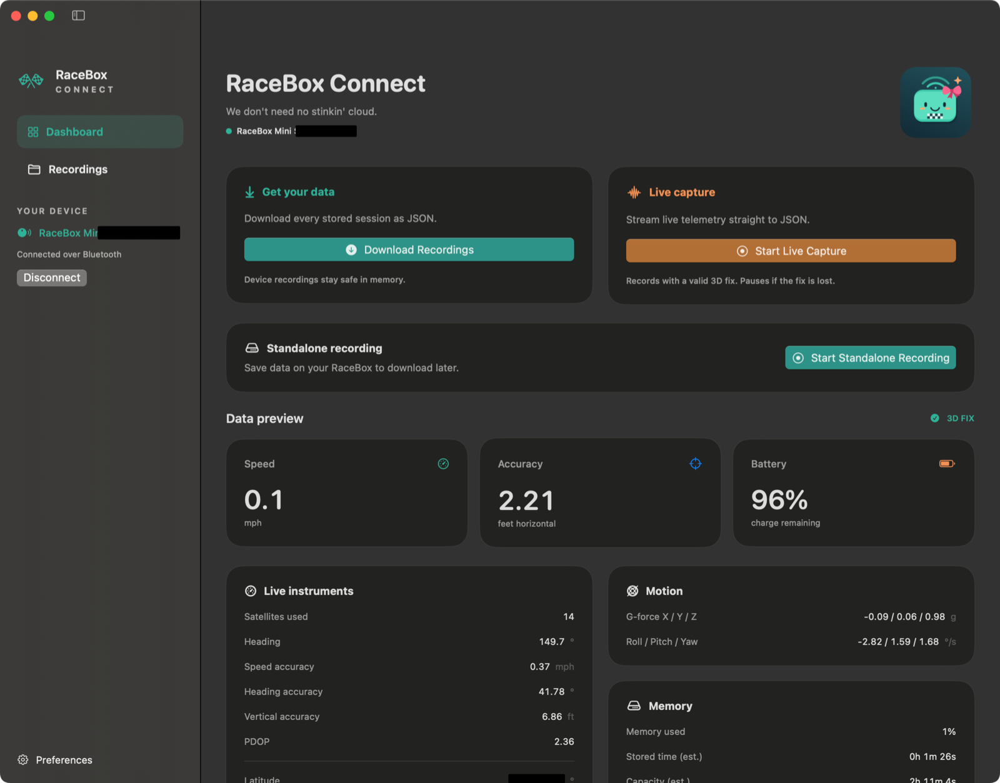
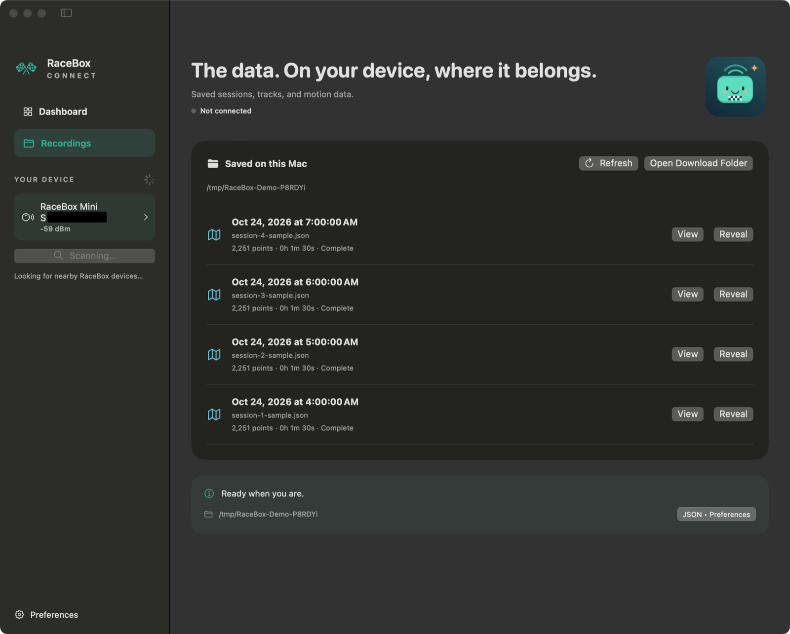
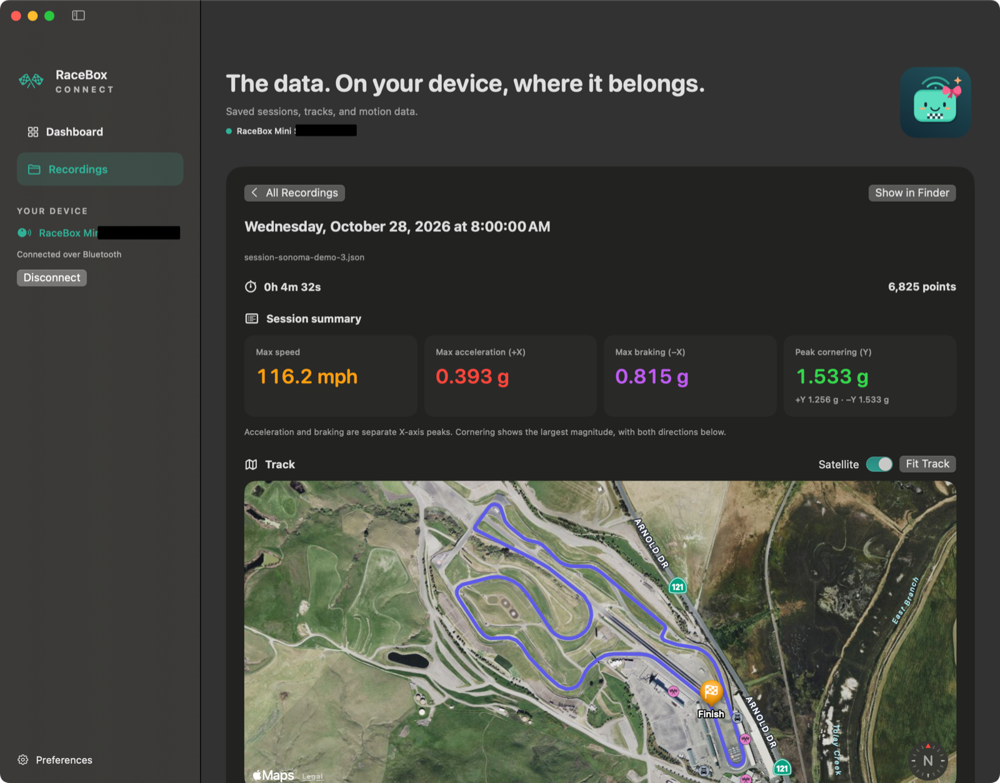
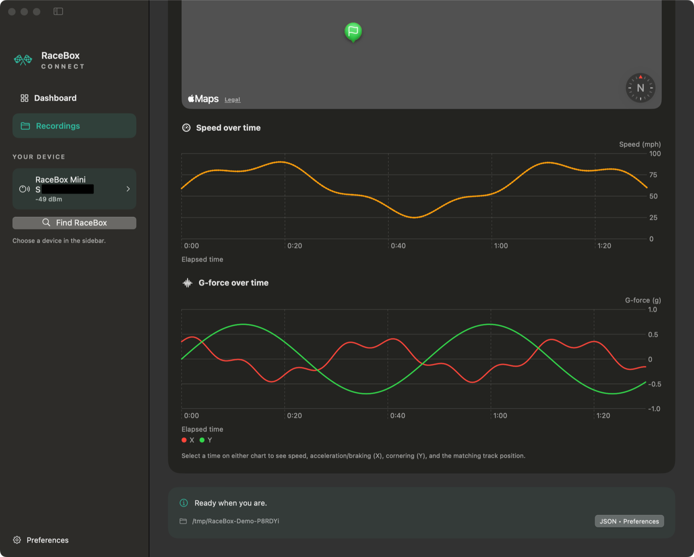
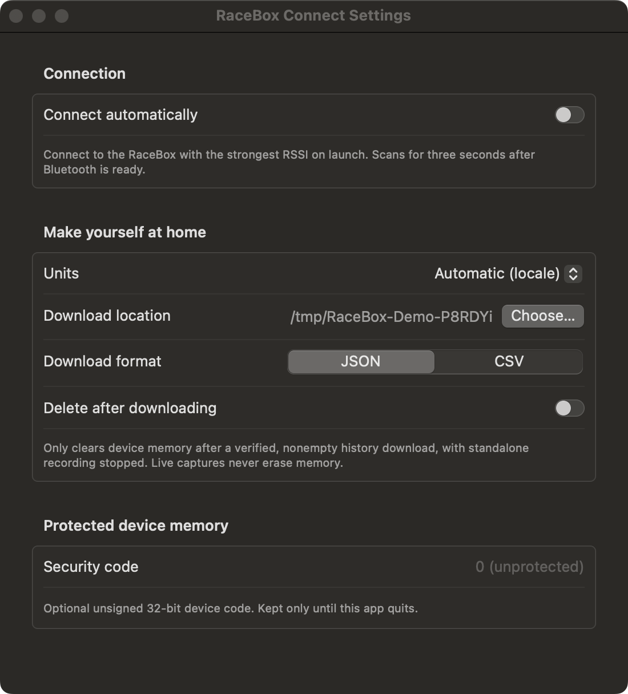

Bring standalone sessions home
Download stored standalone recordings as JSON or CSV. Sessions are organized by date, recordings you've already downloaded are skipped, and old recordings can be erased automatically or left untouched.
Start standalone recording, download saved recordings, and stream live data to your Mac.
No phone or cloud required; your data stays private.
macOS 14 Sonoma or later · RaceBox Mini S · Free & open source
RaceBox Connect downloads standalone recordings stored on your Mini S, not Lap Timer session history from the RaceBox Mobile App or its cloud backups.
An independent project. Not affiliated with or endorsed by RaceBox.

Download standalone recordings directly from your RaceBox, no phone, no login required.
Download stored standalone recordings as JSON or CSV. Sessions are organized by date, recordings you've already downloaded are skipped, and old recordings can be erased automatically or left untouched.
Stream telemetry straight to disk. Live capture waits for a valid 3D fix and pauses if the fix is lost.
Explore tracks on Apple Maps, switch to satellite view, and select a moment in the speed and G-force charts to find it on the map.
See speed, GNSS accuracy, satellites used, battery, motion, and memory status in one friendly dashboard.
Start and stop standalone recording on your Mini S directly from the app. Recording in device memory keeps going after you disconnect.
Choose your download folder, JSON or CSV, metric or imperial units, and optional automatic connection.
Your recording files stay local and are never sent to RaceBox or any third party. Apple Maps requires an internet connection to load map tiles.
A real Mac app, from the first connection to the last corner. Built with SwiftUI and CoreBluetooth.
View fix status and sensor data, download standalone sessions, kick off standalone recordings, and more.

View your saved standalone sessions and live captures with quick access to the original files.

Follow your track and dig into speed, acceleration, braking, and cornering.

See acceleration, braking, and cornering forces alongside speed over time.

Set units, output format, and configure automatic storage management.
Ready when you are
Download the DMG, drag RaceBox Connect to Applications, and allow Bluetooth access.
Power on your Mini S and close any other apps connected to it. Use standalone
recording to save sessions in device memory, or capture live telemetry on your Mac.
RaceBox Connect does not download Lap Timer session history from the RaceBox
Mobile App or its cloud backups.
The download button always points to the latest GitHub release. See release notes and installation instructions for release availability and macOS security guidance.